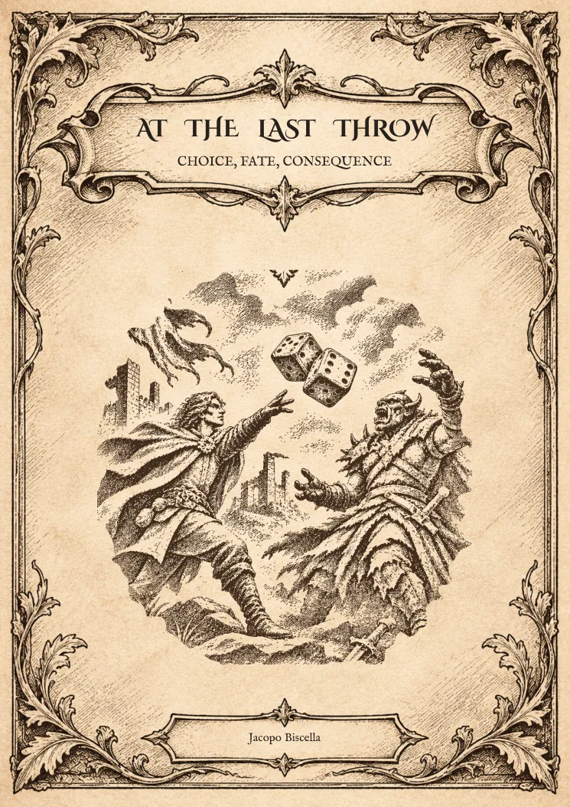

One mechanic for every action
Fighting, sneaking, persuading and casting magic all use the same core roll.
A game by Jacopo Biscella
A compact fantasy roleplaying game built around six-sided dice, decisive actions and meaningful consequences. Create a protagonist, make bold choices, and let the story respond.

Ordinary d6 dice · 2d6+
✧No rigid initiative or grid
✧Choices carry consequences
Ordinary six-sided dice, four attributes and an open world of choices. Actions resolve through six-sided dice; skills and circumstances change how those dice are read.
Combat is a structured conversation without a rigid initiative order or a grid. Powerful magic may have a cost, and a failed critical attempt demands a new approach.
A tabletop RPG for people who don’t have time for tabletop RPGs.
You have a life, but still want to tell stories around a table. Pick up a character sheet, roll ordinary six-sided dice, and make decisions that matter.
Fighting, sneaking, persuading and casting magic all use the same core roll.
No rigid initiative or grid. Describe your action, roll, and follow its consequences.
Grimoires have a cost and a backlash: failure may endanger you or your companions.
Discoveries, flaws and consequential choices shape advancement rather than experience-point grinding.
Wounds and fatigue share a pool: magic, physical exertion and attacks can all leave you vulnerable.
Only ordinary six-sided dice (d6) are needed: no proprietary dice or fixed set. Roll as many as the relevant ability requires, then compare the result to a target number.
| Level | Roll |
|---|---|
| Untrained | 2d6 — keep the lowest |
| Competent | 1d6 |
| Expert | 2d6 — keep the highest |
Two or more sixes make a Critical. A failed Critical requires a meaningful change before retrying. Exertion adds one die at the cost of a fatigue wound.
The core rules are complete and playtestable. The game is in active development; feedback is welcome.
Read the rules